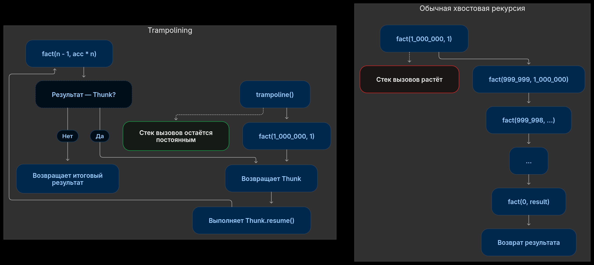

2026-11-14

In functional languages, unlike PHP and other mainstream languages, there are no loops. Recursion takes their place. But in that same PHP the depth of a recursive call is limited, and, well, most of the time that doesn't matter, you just write it with iteration. But my lisp interpreter is written in PHP, which means if I want it to actually work, it has to handle recursive calls of any nesting depth.
Let's start by looking at what PHP gives us:
function show(string $label): void
{
echo $label . "\n";
foreach (debug_backtrace(DEBUG_BACKTRACE_IGNORE_ARGS) as $i => $frame) {
$fn = $frame['function'] ?? '?';
$line = $frame['line'] ?? '-';
echo " #$i $fn line $line\n";
}
}
function fact_rec(int $n): int {
if ($n === 0) {
show('fact rec at n=0');
return 1;
}
return fact_rec($n - 1) * $n;
}
function fact_iter(int $n, int|float $acc = 1): int|float {
if ($n === 0) {
show('fact iter at n = 0');
return $acc;
}
return fact_iter($n - 1, $acc * $n);
}
fact_rec(10);
fact_iter(10);When you run it, the call stack piles up in both the recursive and the iterative form of the function:
fact rec at n=0 #0 show line 63 #1 fact_rec line 67 #2 fact_rec line 67 #3 fact_rec line 67 #4 fact_rec line 67 #5 fact_rec line 67 #6 fact_rec line 67 #7 fact_rec line 67 #8 fact_rec line 67 #9 fact_rec line 67 #10 fact_rec line 67 #11 fact_rec line 79 fact iter at n = 0 #0 show line 72 #1 fact_iter line 76 #2 fact_iter line 76 #3 fact_iter line 76 #4 fact_iter line 76 #5 fact_iter line 76 #6 fact_iter line 76 #7 fact_iter line 76 #8 fact_iter line 76 #9 fact_iter line 76 #10 fact_iter line 76 #11 fact_iter line 80
And, with a large enough initial input, we get Allowed memory size. For the recursive version I ran out of memory computing the factorial of 185_000, for the iterative form — 220_000.
So there is a way to make languages without TCO clear the call stack when it is no longer needed. It's called a trampoline. Unfortunately, it requires changes to the original function:
final class Thunk
{
public function __construct(public Closure $resume) {}
}
function trampoline(Closure $start): mixed
{
$value = $start();
while ($value instanceof Thunk) {
$value = ($value->resume)();
}
return $value;
}
function fact_trump(int $n, int|float $acc = 1): Thunk|int|float {
if ($n === 0) {
show('fact trump at n = 0');
return $acc;
}
return new Thunk(static fn() => fact_trump($n - 1, $acc * $n));
}
trampoline(static fn() => fact_trump(1_000_000));And we see this stack trace:
fact trump at n = 0
#0 show line 81
#1 fact_trump line 85
#2 {closure:fact_trump():85} line 13
#3 trampoline line 90
that's for the factorial of a million! A reminder that the two previous implementations already OOM'd around 200_000.
PS. int|float in the iterative form is there because on
large numbers we overflow int and the interpreter turns the
number into a float.
PPS. The full code example - https://gist.github.com/4irik/83732a02ea7b6c0b85bf40ab0619aab1
Comments
Comments on GitHub